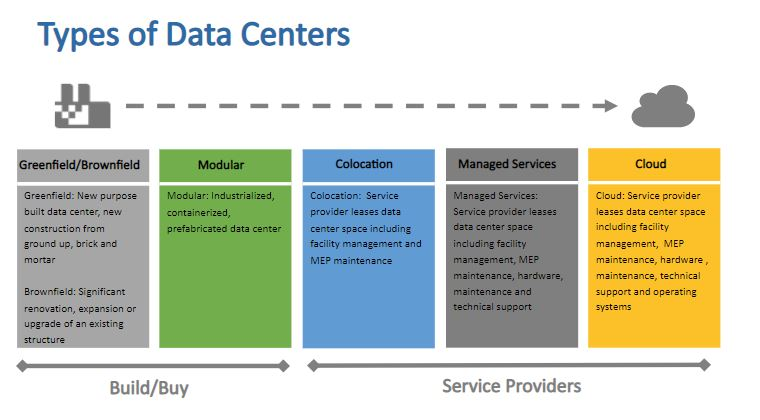

Les différents types de datacenters qu’on peut rencontrer :

Il existe 5 différents types de centres de données parmi lesquels une entreprise peut choisir en fonction de ses besoins. s Au nombre de ces types de datacenters, nous avons :
1- Les datacenters en colocation :
Comme l’indique déjà le nom, on parle de centre de données en colocation lorsque l’équipement, l’espace et la bande passante utilisés sont loués auprès d’un propriétaire de datacenter
Le « colocataire » pourra alors s’il le souhaite externaliser une partie ou tout son équipement informatique sur l’espace qui lui a été alloué.

2- Les datacenters d’entreprise :
Les centres de données d’entreprise sont des datacenters qui relèvent entièrement de la propriété d’une entreprise dans le but de stocker ses données internes et d’héberger ses applications.
3- Le cloud :
Il est possible de solliciter les services d’un fournisseur et configurer un datacenter virtuel hébergé sur le cloud.

C’est une approche qu’on pourrait assimiler à la colocation, mais elle permet de bénéficier d’autres services spécifiques au-delà d’une location de matériel.
4- Les datacenters Edge :
Les datacenters Edge sont de petits centres de données situés à proximité de l’utilisateur final. Contrairement aux gigantesques datacenters, l’idée avec ce concept est de mettre en place de petits centres pour régler au mieux les questions de latence.
5- Les micro datacenters :
Un micro datacenter est un centre de données qui a été réduit autant que possible pour être plus petit au point même de faire la taille d’un petit bureau. Ce type de datacenter ne traite que les données d’une région donnée.
Mais il faut dire que les datacenters massifs sont les plus utilisés. Toutefois, il existe de nouvelles études qui prévoient de créer des centres de données hybrides pour un mariage du datacenter traditionnel et le cloud
vers le haut